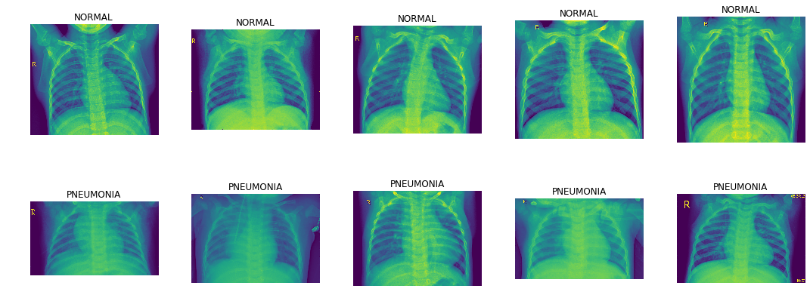
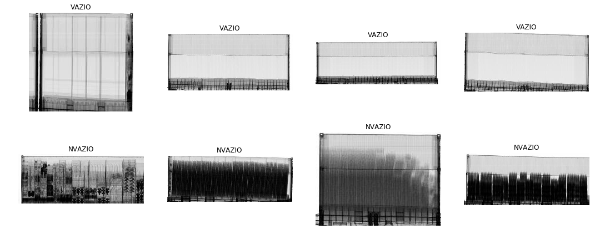

Exploração
BASE ChestXRay
A base chestXRay é composta de 5216 imagens na base de treinamento e 624 imagens na base teste.
São imagens de raio X de tórax, rotulados como paciente NORMAL e paciente com PNEUMONIA.
A base é levemente desbalanceada, havendo quase 3 vezes mais exemplos de pneumonia.

BASE Vazios
Esta base é composta por 20845 imagens de treinamento e 2317 imagens de validação. A base é balanceada.
São duas categorias: nvazio - contêineres contendo algum tipo de carga, mesmo que mínimo, e vazio - contêineres vazios.
Foram inseridos propositalmente, somando à extração aleatória, 3000 imagens de contêineres de "classificação difícil", imagens que algoritmos anteriores falharam para classificar.
Além disso, durante a exploração, foram descobertas em torno de 2,5% de imagens rotuladas erradamente e 2% de imagens que mesmo a visão humana teria dificuldade de saber se está vazio ou não.
Assim, como o melhor desempenho obtido foi próximo de 98% para base "limpa" e de 96% para base completa (ver detalhes no relatório detalhado e nos respectivos notebooks) pode ser considerado que para esta tarefa foi obtido um classificador excelente.

BASE NCMs únicos
Esta base é composta de 41809 imagens de 868 categorias.
São imagens de inspeção não invasiva de contêineres.
Benchmark
O primeiro modelo a ser treinado será sempre uma rede convolucional bem simples.
Além disso, na base Vazios, há um modelo em produção, uma SVM, que poderá ser comparada.
As redes neurais convolucionais são hoje o "estado da arte" em visão computacional. As camadas convolucionais aprendem a aplicar filtros em diversas regiões das imagens, destacando formas, texturas, linhas, de acordo com a necessidade da tarefa em que estão sendo treinadas. As convoluções são aplicadas consecutivamente, em objetos cada vez maiores, porque as imagens são progressivamente filtradas por convuluções, ou mais comumente por camadas de pooling que diminuem o tamanho da entrada, destacando partes mais importantes, e os filtros das convoluções mais profundas combinam então os destaques dos filtros predecessores. Nas últimas camadas, estes mapas de características descobertos pelas convoluções são combinados em uma rede neural convencional conectada para utilização na tarefa de classificação.
Como a rede neural é um aproximador de funções universal, através de backpropagation e gradiente descendente esta consegue derivar os pesos necessários para a tarefa de classificação treinada, desde que adequada projetada e treinada.
Antes do advento das redes neurais, os algoritmos que costumavam obter melhores resultados em classificação de imagens eram as Suport Vector Machines - SVMs. As SVMs podem utilizar diversos "kernels" para a tarefa de classificação, tendo sido o kernel RBF utilizado com sucesso durante décadas, antes da rede AlexNet ter baixado em mais de 10 pontos percentuais o erro no desafio AlexNet, antes dominado por SVMs. O kernel rbf funciona procurando várias funções gaussianas, em cada dimensão, que separem por uma margem específica, que é um hiperparâmetro do kernel, a maior quantidade de exemplos das classes.
Assim, os baselines utilizados serão um kernel RBF já em produção e uma rede neural extremamente simples e rápida para treinar. Em seguida, será utilizada a rede DenseNet121 que apresenta um bom equilíbrio entre resultados comprovados em bases difíceis, consumo de memória e complexidade computacional, com a técnica de Transfer Learning. Em seguida, será treinado um modelo de rede siamesa. Todos os modelos serão avaliados paralelamente conforme seção métricas.
Metodologia
Pré processamento de dados
Está sendo utilizado o pacote PIL ou o ImageDataGenerator(que usa pacote PIL) do keras para abertura das imagens e redimensionamento com ANTALIAS. Os valores RGB originais estão sendo reescalados dividindo por 255. Além disso foram testadas diversas opções de Image Augmentation.
No caso da base Vazios, foi detectado erro de rotulagem e automaticamente gerada uma base filtrada através de threshold em um dos classificadores treinados.
Os detalhes do pré processamento e principalmente da execução estão nos Notebooks. Resumo/índice no próximo item.
Implementação e refinamento
Ver próximo item, que resume os achados de cada notebook utilizado.